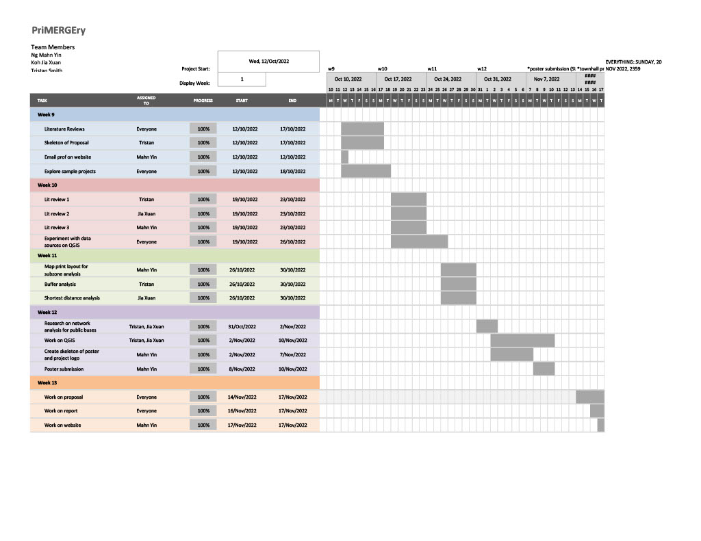

Project Proposal
Here’s the link to our project proposal.
Background
With 183 primary schools in Singapore (as of 2019), parents of primary school students may require to ballot during the Primary 1 (P1) Registration Exercise to secure a place in a preferred school. One main criteria that affects a student’s priority of admission is his/her residential’s distance away from the school of choice. The Home-School Distance category is an important factor that secures a place for the child in the primary school, and thus an available school within the acceptable distance of the family’s residential address in turn affects the accessibility to schools in the acceptable area.
With recent mergers and closures of primary schools in the past few years, the government attributed it to shrinking school cohorts and declining birth rates (Statista, 2021). In order to visualize the negative effects of closures on the accessibility of schools for some students living in certain residential areas and subzones, using a geographic system would be helpful. As such, our team from SMU began working on this project to conduct geospatial analytics to analyze the possible decreased accessibility for certain families who have children studying in primary schools.
Motivation
In view of this GIS Project, we were excited and curious to apply our newly achieved knowledge and skills in geospatial analytics to possibly add value to the government and the Ministry of Education (MOE) in their valuation of any possible negative and positive effects of these closures and mergers of primary schools.
Our team focused specifically on the 2019 merger of 7 pairs of primary schools, leading to the closure of these 7 campuses. We chose this year to analyze because it is the latest fully completed process as compared to ongoing ones now. We also chose to focus on primary schools because of the higher emphasis placed on the priority on enrolment due to the proximity distance between one’s residential address and school of choice.
Objective
Our main objective of carrying out this project is to conduct a geospatial analysis of the primary schools in Singapore to better understand whether the closures of 7 schools have impacted the accessibility of certain students living in nearby residential areas. Our primary objective would be to discover the extent of the decreased accessibility, given the assumption that the closure of a school reduces a student’s opportunity to enrol into a primary school. Our network analysis will take on three different approaches, finding the buffering distance, finding the shortest network distance, and finding the fastest network distance. To analyze this further, we will consider the top transport modes that primary school students would use to get to school; by foot and private transport. Based on our results, we will be able to derive the possible extent of these closures from the perspectives of the public.
Data Collection
For the purpose of this project, the following data sources have been used.
| File Name | File Format | Link to Data Source |
|---|---|---|
| Singapore Residents by Planning Area / Subzone, Single Year of Age and Sex, June 2011-2020 | csv | https://www.singstat.gov.sg/-/media/files/find_data/population/statistical_tables/respopagesex2011to2020.ashx |
| master-plan-2019-subzone-boundary-no-sea | kml and geojson | https://data.gov.sg/dataset/master-plan-2019-subzone-boundary-no-sea |
| malaysia-singapore-brunei-latest-free | shapefile | https://download.geofabrik.de/asia/malaysia-singapore-brunei.html |
| school-directory-and-information | csv | https://data.gov.sg/dataset/school-directory-and-information |
Scope of Work
The project will comprise of, but not limited to the following steps:
• Selection of project area in Singapore, the year of the project area is determined to be 2019
• Data collection, extraction, integration, transformation, and wrangling
• Designing and building GIS model
• Preparing report of project
• Performing suitable geospatial analysis by using GIS as well as other techniques
• Preparing poster and project webpage
• Recording of minute meetings for every project meeting
Project Timeline
